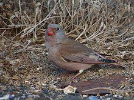

| Trumpeter Finch | |
|---|---|
|  | |
| On Lanzarote, Canary Islands, Spain | |
| Binomial name | |
| Rhodopechys githaginea (Lichtenstein, 1823) |
The Trumpeter Finch, Rhodopechys githaginea, is a small passerine bird in the finch family Fringillidae.
This bird breeds in the Canary Islands, across north Africa, and in the Middle East and into central Asia. There is a small European population in southern Spain. Many birds are largely resident, but there is post-breeding dispersal, and some Asian breeders migrate into Pakistan for the winter.
In the summer of 2005 there was a notable eruption of this species into northwestern Europe, with several birds reaching as far as England.
Stony desert or semi-desert is favoured for breeding. Four eggs are laid in a nest in a rock crevice.
This gregarious terrestrial finch's food is mainly seeds, and, particularly in the breeding season, insects.
The Trumpeter Finch is a small, long-winged bird. It has a large head and short, very thick bill. The summer male has a red bill, grey head and neck, and pale brown upper parts. The breast, rump and tail are pink, the last having dark terminal feathers. Winter males, females and young birds are a very washed-out version of the breeding male. The song of this bird is a buzzing nasal trill, like a tin trumpet.
Rhodopechys means "rosy forearm" in Ancient Greek and as a term goes all the way back to Homer, who used it often as an epithet to describe women and goddesses.
{kind=link}